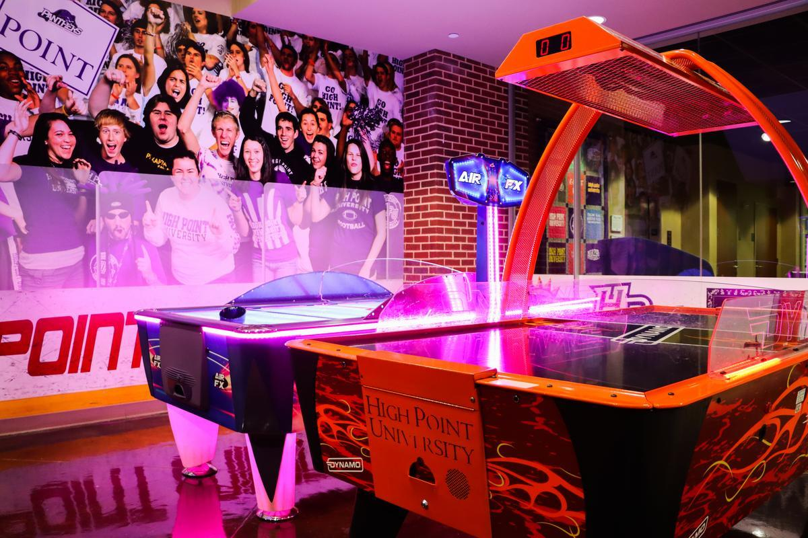
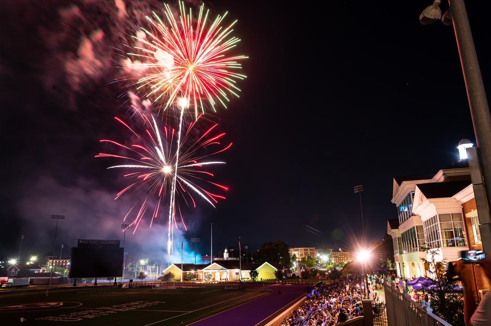

1

Free Food Trucks, Every Week
A rotating lineup parks on campus, included for students.

Life at HPU
High Point University is a residential campus where most students live, eat, attend concerts, and go to the movies without leaving the property. This is a guide to what is actually here.
The Short Answer
HPU has put more than $1 billion into the campus since 2005, all of it for the students who live and learn here. State-of-the-art academic facilities, fine-dining restaurants on the meal plan, an arena that books national touring acts, and free events nearly every week. More than 6,500 students are enrolled, and 95% of them live on campus.
Welcome Home
From the food trucks on Wednesday to the ice rink in December, here’s where your days fill up.

Dining

Where You’ll Live

Recreation

Around Campus

Events

Traditions

Game Day

Fraternity & Sorority Life
Signature Moments
A rotating lineup parks on campus, included for students.

J. Cole, Maren Morris, T-Pain, and Jason Derulo have performed here.

An outdoor ice rink below Millis, a walk-in snow globe, and a hot cocoa bar each December.

HPU runs the first and longest-running campus concierge in the country.
Go Deeper
Come See It
The best way to understand the campus is to walk it.